En AI-app där du fotar dina ingredienser och får receptförslag baserat på vad du redan har hemma.
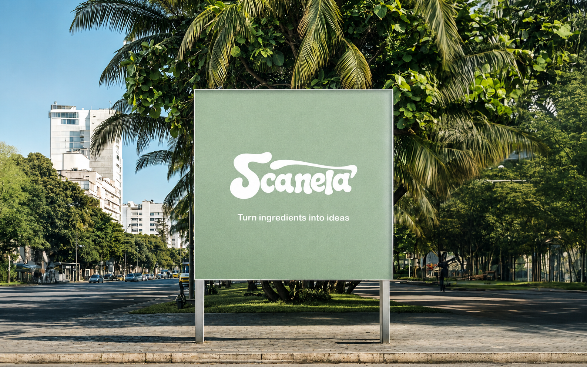
De flesta har varit där, kylskåpet är fullt, men inget känns som en måltid. Antingen slänger man ingredienser man aldrig hann använda, eller så handlar man nytt istället för att laga på det som redan finns hemma.
De flesta receptappar löser inte det problemet, de förutsätter att du redan vet vad du vill laga och bara söker efter ett recept. Jag ville vända på det och utgå från vad du faktiskt har, inte vad du borde ha.
Målet var att ta bort så många steg som möjligt mellan "jag är hungrig" och "jag vet vad jag ska laga". Inga sökningar, inga listor, bara en bild.
Scanela löser problemet genom att låta användaren fota det som finns i kylskåpet. Appen genererar receptförslag som utgår från exakt de ingredienserna, ingen manuell inmatning krävs.
Idén bygger lika mycket på ett affärsperspektiv som ett designperspektiv. Appen minskar matsvinn samtidigt som den sänker tröskeln för matlagning. Det är en tydlig nyttoeffekt för användaren, vilket är precis vad jag tror gör ett produktidé värd att faktiskt bygga, inte bara en teknisk övning.
Jag ansvarade för hela flödet från idé till färdig produkt — från första konceptet till kod och lansering. Här är vad det innebar i praktiken.
Ett urval av gränssnittet i telefonformat.
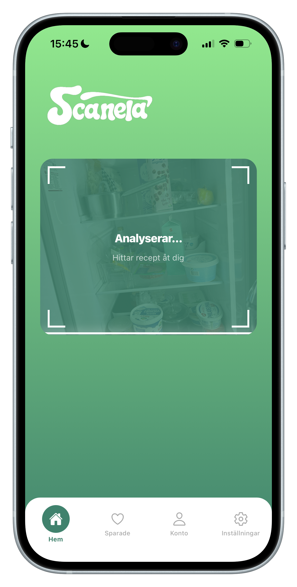
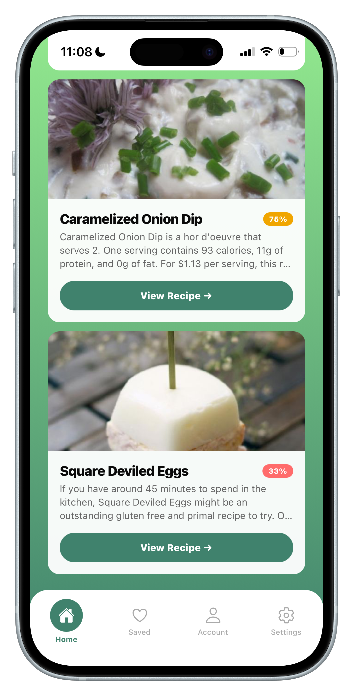
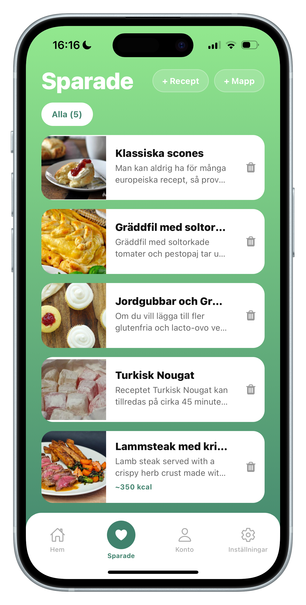
Ett urval från Scanelas hemsida.
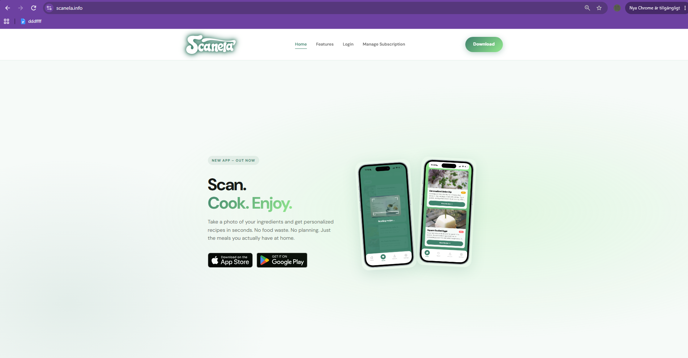
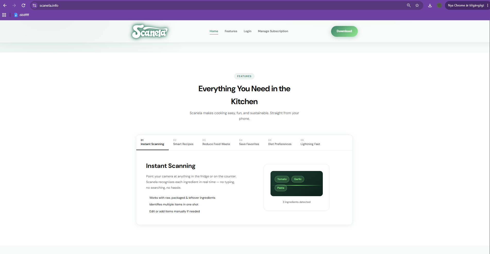
Scanela finns att ladda ner för iPhone.
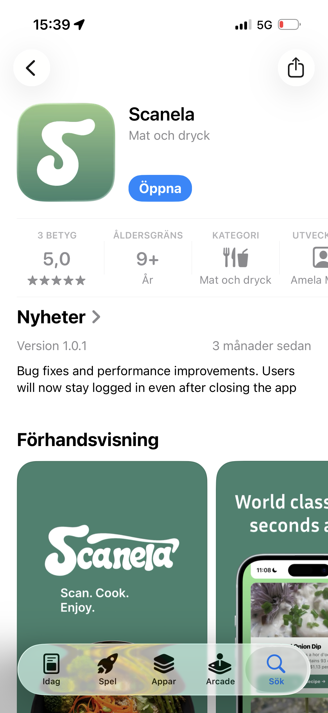
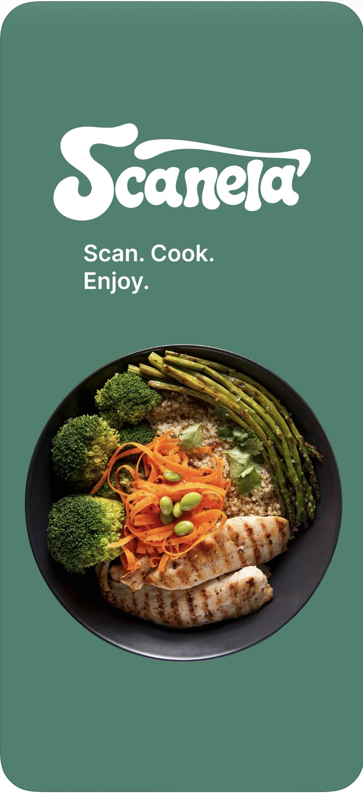
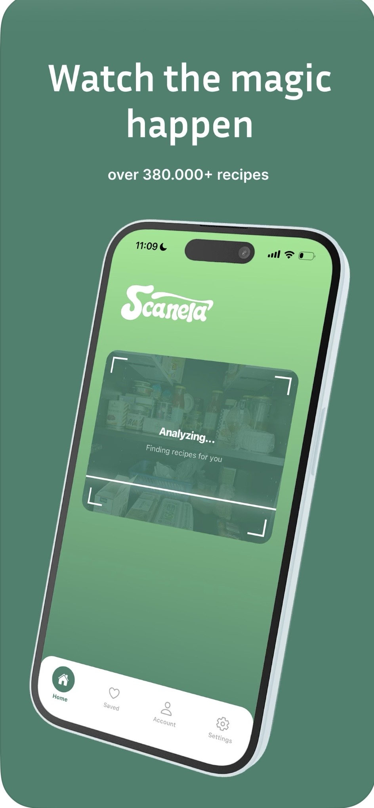
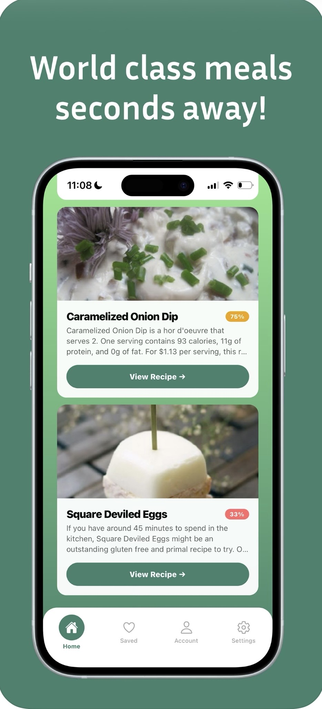
Scanela på sociala plattformar.
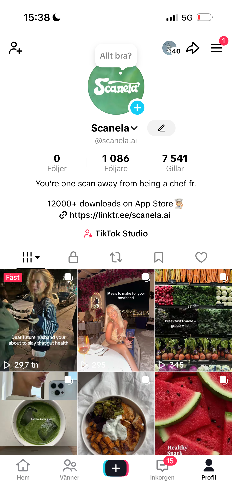
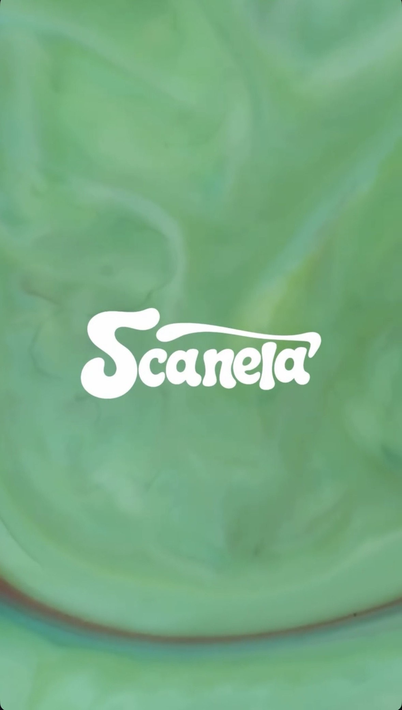
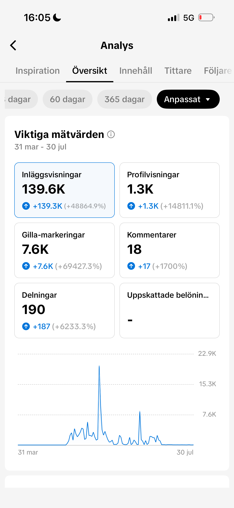